Tre domeniche mattina
Tre domeniche mattina del 2027, tre posti che non si somigliano, la stessa scena.
Ad aprile sotto i pini di Punta Ala, col mare a pochi passi. A giugno a Mezzana, in Val di Sole, col Passo Tonale che aspetta lassù. A settembre a Santa Sofia, sulla soglia delle Foreste Casentinesi. Ogni volta si parte tutti insieme, e a metà mattina la strada si apre in due direzioni.
Questa guida racconta i tre weekend di Unpaved Roads 2027, e ti aiuta a scegliere quello da mettere accanto al Tuscany Trail, col bundle del 1 novembre, o da prendere da solo quando aprono le iscrizioni singole. L'abbiamo scritta partendo dalle domande che ci fanno prima di iscriversi, e dalle risposte di chi c'era.
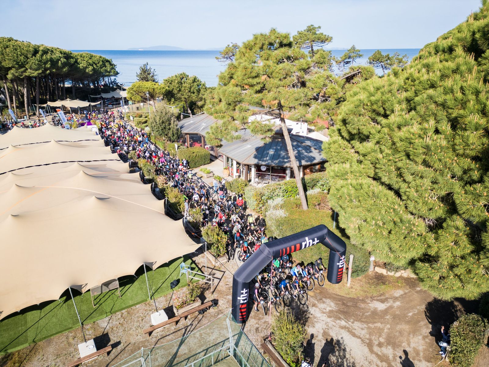
Tre cose da sapere prima di innamorarti
- È gravel vero. In Val di Sole e nelle Foreste Casentinesi anche il corto supera i mille metri di salita.
- Lungo la strada non c'è assistenza meccanica. Camera d'aria e pompa le porti tu.
- I ristori hanno un orario, e te lo diciamo prima, weekend per weekend.
Dal 2022 più di duemila persone hanno pedalato con noi, e il resto di questa guida spiega perché tante tornano.
Indice
Dieci capitoli, dal bivio della domenica alle date per iscriversi. Puoi leggerli in ordine o partire da quello che ti preme di più.
Il bivio
C'è una domanda che quasi tutti si fanno in silenzio, prima di iscriversi. «E se a metà salita non ne ho più?»
Per questo Unpaved Roads ha due percorsi e un bivio. La domenica si parte tutti insieme, e più avanti la strada si divide in due. Al bivio decidi tu se fare il lungo o il corto. Non al momento dell'iscrizione, non la sera prima. Lì, con le gambe che hai quella mattina.
Nessuno ti chiede il tempo all'arrivo. Ti fermi per una foto, per un caffè, per aspettare un amico. I ristori sono lungo la strada, due sul lungo e uno sul corto, più il ristoro finale alla base.
A Punta Ala, nel 2026, uno su tre ha scelto il corto.
«Grazie per i vostri sorrisi, grazie per avermi fatto risalire in bici.»
Partecipante Unpaved Roads 2022, in Chianti, sul corto
Una cosa va detta. Il corto non è una passeggiata in ciclabile. In Val di Sole e nelle Foreste Casentinesi anche il corto supera i mille metri di salita. A Punta Ala è il più dolce, 56 chilometri e 560 metri, ed è il weekend giusto se è il tuo primo evento gravel.
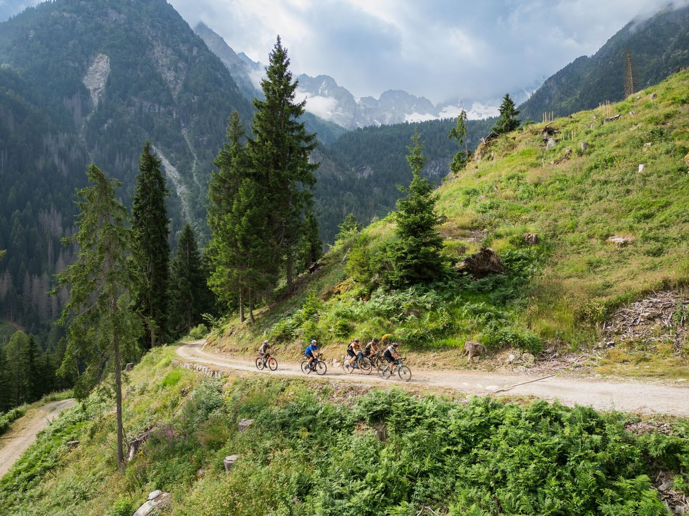
E con quale bici? La risposta, nel prossimo capitolo, probabilmente ti farà piacere.
La bici che hai in garage
Gravel è il nome della strada, non della bici.
Va bene la gravel, va bene la mountain bike, va bene la e-bike. A Punta Ala, nel 2026, chi era in mountain bike o in e-bike consiglierebbe il weekend a un amico esattamente come gli altri.
I numeri vengono dal questionario di Punta Ala 2026. A Punta Ala il fondo è scorrevole, con qualche passaggio sabbioso vicino al mare. In Val di Sole e nelle Foreste ci sono salite lunghe su forestale e qualche discesa tecnica.
«Siamo tutti ciclisti, indipendentemente dal mezzo, dall'età, dalla forma fisica, dalla storia medica precedente.»
Finisher del Tuscany Trail 2026, in e-bike
Cosa serve davvero
- Gomme larghe, da almeno 40 millimetri, 45 in Val di Sole.
- Rapporti agili, per salire senza fretta.
- Camera d'aria, leve e pompa, perché lungo la strada non c'è assistenza meccanica.
- Il kit del regolamento, cioè casco, luci, gilet catarifrangente, fischietto o campanello e cellulare.
La bici da strada invece no. Su questi fondi le gomme strette fanno soffrire, e chi ci ha provato se lo ricorda.
Se venite in due, uno in e-bike e uno no, fate la stessa strada. Al bivio potete anche separarvi, e ritrovarvi al ristoro finale.
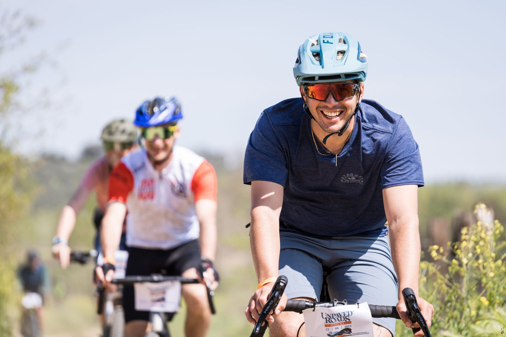
Tre weekend, tre caratteri
Per tenere questi tre weekend abbiamo fatto sopralluoghi in undici località. Ognuno ha il suo carattere, e vale il viaggio per un motivo diverso.
Punta Ala, 24 e 25 aprile
Il mare della Maremma. Si parte dalla pineta del PuntAla Camp & Resort, si corre sopra Cala Violina e Cala Martina, il lungo sale ai borghi di Gavorrano e Caldana, e tutti e due i percorsi passano dalla riserva della Diaccia Botrona e dal lungomare di Castiglione della Pescaia. Sterrati scorrevoli tra pinete e macchia.
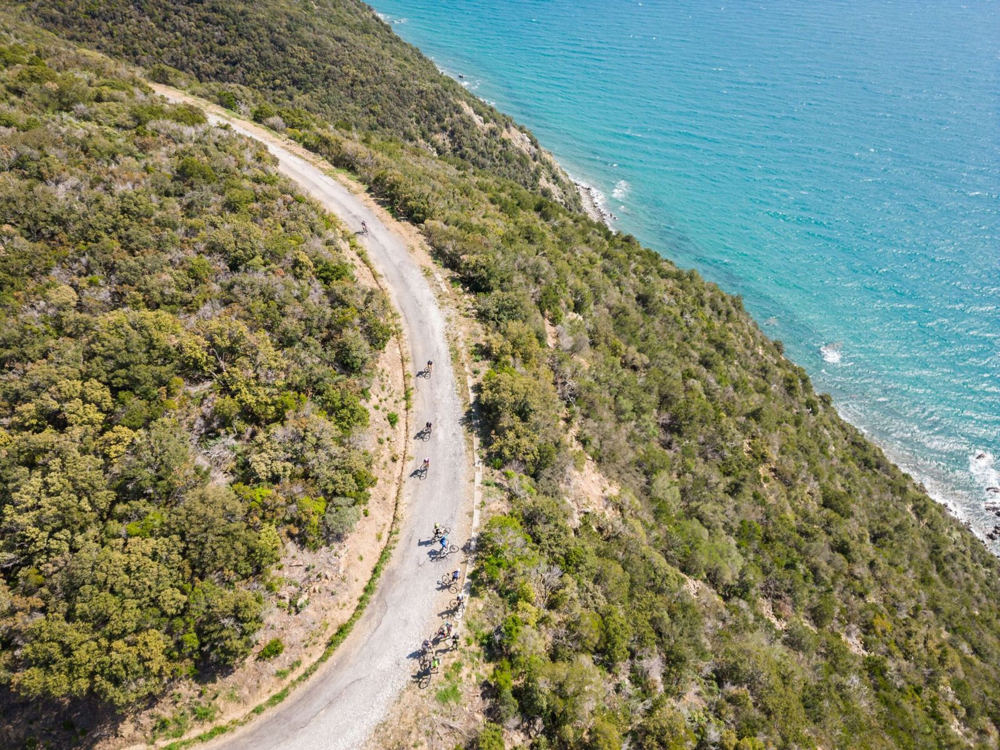
Val di Sole, 26 e 27 giugno
La montagna del Trentino. Si parte da Mezzana, lungo il Noce, si passa sotto la torre del Castello San Michele di Ossana e si sale al Passo Tonale, oltre milleottocento metri, lungo un'antica strada militare della Prima guerra mondiale. Il lungo prosegue fino a Caldes, tra boschi e meleti.
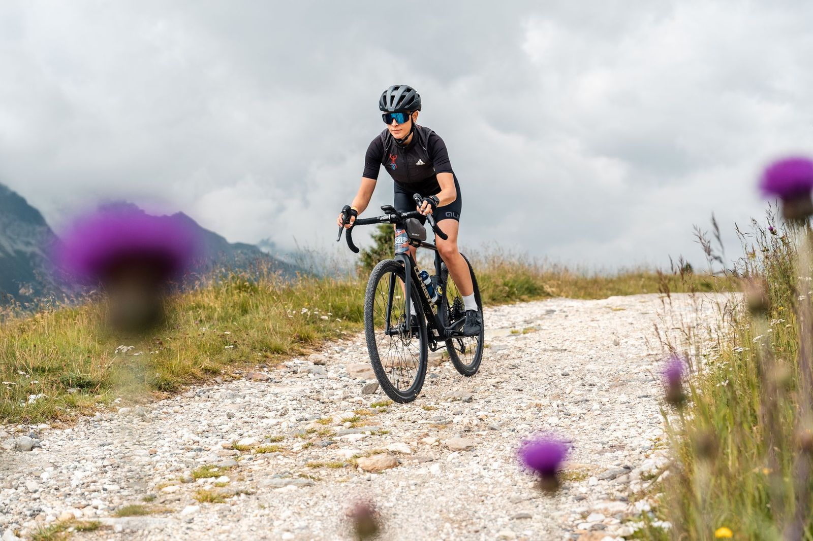
Foreste Casentinesi, 18 e 19 settembre
Il bosco dell'Appennino. Si parte da Santa Sofia, si sale in sterrato sopra il lago di Ridracoli fino al Passo del Vinco e ai pascoli di Casanova dell'Alpe, e il lungo scende nella faggeta del Parco Nazionale fino alla radura di La Lama. All'arrivo, i piatti del posto.
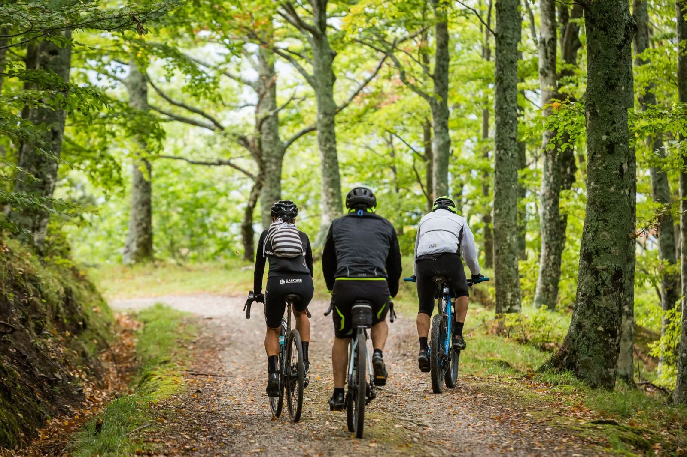
I due percorsi
Punta Ala. Lungo di 83 chilometri e 1.040 metri, con i ristori di Caldana e Castiglione della Pescaia. Corto di 56 chilometri e 560 metri, col ristoro di Castiglione.
Val di Sole. Lungo di 82 chilometri e 1.860 metri, con i ristori del Passo Tonale e del Lastè. Corto di 46 chilometri e 1.210 metri, col ristoro del Passo Tonale.
Foreste Casentinesi. Lungo di 72 chilometri e 1.850 metri, con i ristori di Casanova dell'Alpe e San Paolo in Alpe. Corto di 43 chilometri e 1.140 metri, col ristoro di Casanova.
Sono i percorsi del 2026. Le tracce del 2027 arrivano agli iscritti, e chilometri e dislivello li scriviamo prima, sempre.
Quale scegliere
- È il tuo primo evento gravel? Comincia da Punta Ala, col corto. È il weekend più dolce, e ad aprile c'è già il sole.
- Cerchi la montagna? La Val di Sole, a fine giugno, quando le giornate sono le più lunghe dell'anno.
- Ami il bosco e il silenzio? Le Foreste Casentinesi, a settembre, dentro una delle foreste più antiche d'Europa.
- Non riesci a scegliere? Più di cinquanta persone, nel 2026, ne hanno fatti due o tre.
Il percorso non è segnato con le frecce. Si segue la traccia GPS, e nel capitolo 7 ti spieghiamo perché è più semplice di quanto sembri.
Il weekend, ora per ora
Unpaved Roads non comincia la domenica. Il sabato è fatto per arrivare con calma e conoscere chi pedalerà con te.
Il sabato
- La mattina la social ride, un giro in compagnia per sciogliere le gambe.
- Il pomeriggio è libero, al mare, in valle o nel bosco, oppure su una delle tracce bonus.
- Dal tardo pomeriggio, alle 16:30 o alle 17 secondo il weekend, al village ritiri il pacco, ascolti i talk e conosci gli altri all'aperitivo di benvenuto.
- In serata l'estrazione dei premi degli sponsor.
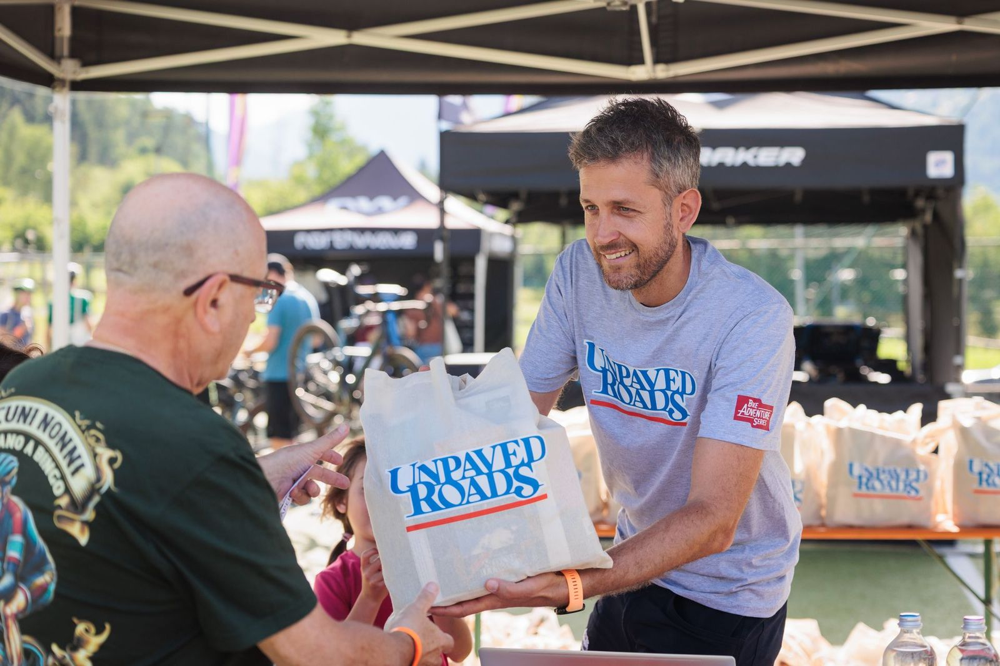
La domenica
- Dalle 7 il ritiro del pacco, per chi arriva la mattina.
- Il briefing, poi si parte tutti insieme, alle 8:30 in Val di Sole e alle 9 negli altri due weekend.
- Al bivio scegli lungo o corto, poi i ristori lungo la strada.
- Alla base il ristoro finale coi piatti del posto, le docce e il lavaggio bici.
Sono gli orari del 2026. Per il 2027 te li manderemo insieme alla guida degli iscritti.
Puoi venire anche solo la domenica. Ritiri il pacco la mattina e parti con gli altri. Ma il sabato è la parte che chi c'è stato racconta di più.
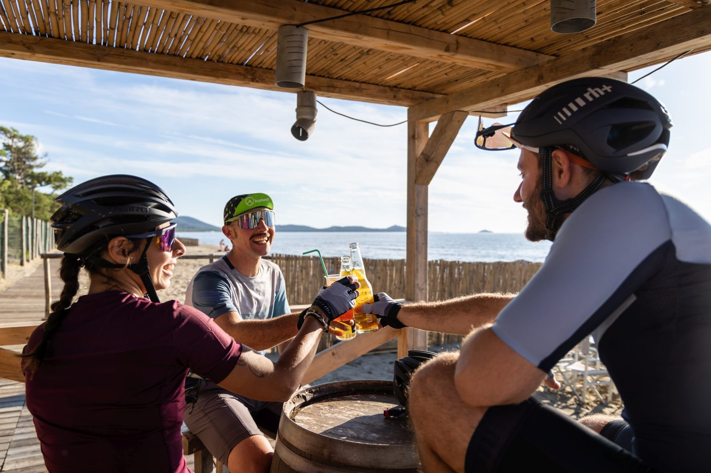
«La formula è perfetta, molto relax e lasciato tutto al singolo partecipante su come gestire l'evento.»
Partecipante Unpaved Roads 2022, in Chianti
Nessuno resta in disparte
Puoi arrivare da solo, in coppia o con il tuo gruppo. Il weekend è costruito perché nessuno resti a guardare gli altri da lontano.
Da solo. Il sabato c'è la social ride della mattina, poi l'aperitivo e l'estrazione dei premi. La domenica si parte tutti insieme, e in salita le chiacchiere vengono da sole.
In coppia, con passi diversi. Al bivio vi potete dividere, uno sul lungo e uno sul corto, e ritrovarvi al ristoro finale. Nessuno aspetta l'altro col muso lungo.
Con chi non pedala. Intorno a ogni base c'è di che passare la giornata, il mare a Punta Ala, i castelli e le terme in Val di Sole, il Parco Nazionale alle Foreste.
E in tanti tornano. Più di duecento persone hanno fatto una seconda stagione con noi.
Dormire, arrivare, restare
Ogni weekend ha la sua base, e intorno le sue offerte per dormire.
Punta Ala
La base è il PuntAla Camp & Resort, in pineta, con la spiaggia e il bike center, e per chi partecipa c'è un'offerta dedicata. Si arriva dalla A12 e dalla SS1, e la stazione più vicina è Follonica.
Val di Sole
La base è a Mezzana. Da Dimaro al Tonale ci sono strutture con un'offerta dedicata a chi partecipa, e a Ossana un campeggio. Si arriva dalla A22 e dalla SS42, oppure in treno fino a Trento e poi con la ferrovia Trento-Malé-Mezzana.
Foreste Casentinesi
La base è il Parco della Resistenza di Santa Sofia. In paese ostello, albergo e B&B hanno un'offerta dedicata a chi partecipa. Si arriva dalla A14, uscita Cesena Nord, e dalla E45, oppure in treno fino a Forlì e poi col bus.
Restare qualche giorno
Ogni iscrizione comprende tre tracce bonus, e con quelle il weekend diventa una piccola vacanza. Il pernottamento non è compreso nella quota, e l'elenco completo delle strutture arriva con la guida degli iscritti.
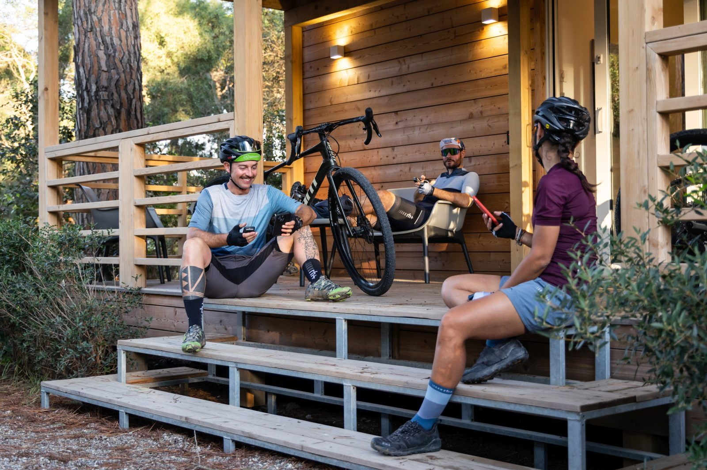
Se ti perdi, se fori
Il percorso non è segnato con le frecce, e va bene così. Perdersi è più difficile di quanto pensi.
Si segue la traccia GPS, sul navigatore o sul telefono. Con l'iscrizione hai Ride with GPS, che sblocca le mappe della regione e ti guida svolta per svolta. La traccia definitiva arriva nei giorni prima dell'evento, così hai il tempo di caricarla e di guardarla con calma.
I ristori fanno da punti fermi lungo la strada. Sai dove sono, sai quando chiudono, e sai che fino a lì ci sono arrivati in tanti prima di te.
Lungo la strada non c'è assistenza meccanica. Per questo il regolamento chiede a tutti un piccolo kit, e noi ti chiediamo di aggiungere camera d'aria, leve e pompa. Una foratura capita, e si ripara in dieci minuti.
E se una giornata storta ti fa cambiare idea, al bivio il corto è sempre lì.
Cosa paghi, voce per voce
Una traccia si trova anche gratis. Un weekend così no.
La quota paga il weekend già organizzato, tutto quello che un giro fatto da soli non ha. Ecco cosa comprende, voce per voce, come nel 2026.
- Traccia GPX del lungo e del corto, disegnata dopo i nostri sopralluoghi
- Ride with GPS per sbloccare le mappe regionali e navigare dal telefono
- Cartina con i due percorsi e le altimetrie
- Due ristori lungo il percorso, uno sul corto, e il ristoro finale
- Aperitivo di benvenuto il sabato pomeriggio
- Base dell'evento con bagni, docce e parcheggio, il sabato e la domenica
- Lavaggio bici
- Fotografi e videomaker lungo il percorso, per le foto e i video del tuo weekend
- Cappellino da ciclista Unpaved Roads, riservato agli iscritti
- Box con prodotti tipici del territorio, bottiglia di vino Unpaved Roads e bottiglietta di amaro
- Banner da manubrio
- Guida digitale con parcheggi, trasporti, hotel e tutto il resto
- Guida turistica del territorio e tre tracce bonus per esplorare la zona
- Offerta dedicata per dormire (il pernottamento non è compreso)
- Accesso alla community, punti e badge Bike Adventure Series, vantaggi dei partner della serie
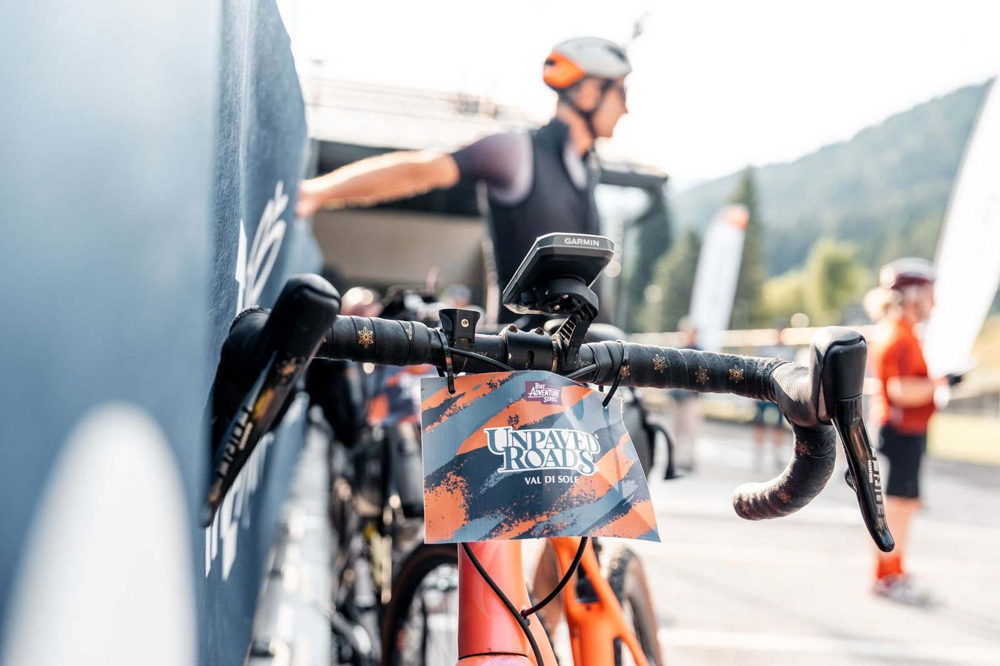
Quanto costa
«Soprattutto la cura nei dettagli, nel prendersi carico di ogni aspetto, senza trascurare nulla.»
Partecipante Unpaved Roads 2022, in Chianti
Le domande che arrivano sempre
Ogni anno ce le fanno in tanti, per email e su WhatsApp. Eccole tutte insieme.
«Serve il certificato medico, se non è una gara?»
Sì, per la sicurezza di chi pedala. Va bene il certificato di idoneità all'attività sportiva di particolare ed elevato impegno cardiovascolare, oppure il certificato agonistico per il ciclismo, valido fino al giorno dell'evento. Non serve il giorno dell'iscrizione. Lo carichi nella tua area personale di Bike Adventure Series entro 30 giorni prima dell'evento.
«E se poi non posso venire?»
Te lo diciamo chiaro, una volta sola. La quota non si rimborsa e l'iscrizione non si può cedere a un'altra persona. Se invece è l'evento a saltare per cause di forza maggiore, la quota vale per l'edizione successiva, con un contributo di 14 €. Il resto è nel regolamento, che conviene leggere prima di iscriversi.
«Posso iscrivere un amico?»
Puoi pagare per lui, ma l'iscrizione va fatta con il suo account Bike Adventure Series, perché il certificato medico e i dati sono personali.
«C'è un'età minima?»
Diciotto anni, compiuti al momento dell'iscrizione. Un'età massima invece non c'è.
«Faccio anche il Tuscany Trail. Posso prendere tutti e due?»
Sì, ed è il modo più semplice. Dal 1 novembre 2026 alle 11 il Tuscany Trail 2027 si compra in bundle insieme a un altro evento della Bike Adventure Series. Se scegli un weekend Unpaved Roads, nel bundle costa 109 €, nello stesso acquisto, prima che aprano le iscrizioni singole.
Quando entrare
Le iscrizioni a Unpaved Roads non restano aperte a lungo, e c'è un motivo semplice.
Nelle ultime edizioni più di otto iscrizioni singole su dieci sono arrivate nelle prime due o tre settimane, quelle della prevendita a 109 €. Dopo il prezzo sale a 129 €, e i posti sono limitati.
- Il 1 novembre 2026 alle 11 apre il bundle col Tuscany Trail 2027. Chi fa il Tuscany Trail aggiunge il suo weekend Unpaved Roads, a scelta fra i tre, nello stesso acquisto, a 109 €.
- Le iscrizioni singole ai tre weekend aprono più avanti. La data la sa per prima chi ha lasciato l'email.
- Si passa da Bike Adventure Series, con un account personale. Crealo adesso, e il giorno dell'apertura ti bastano due minuti.
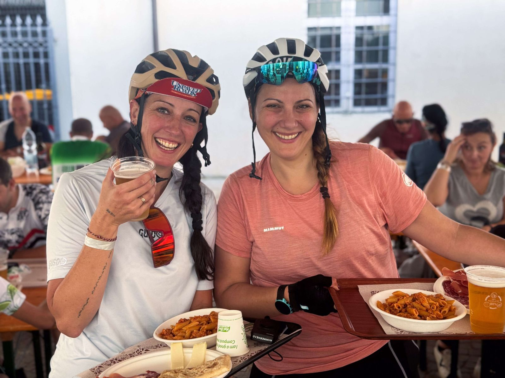
Il giorno dell'apertura ti scriviamo noi.
Se hai lasciato l'email per ricevere questa guida, sei fra le prime persone che avvisiamo, con la data e il link per iscriverti. Intanto puoi preparare il tuo account.
Crea il tuo account →Punta Ala · Val di Sole · Foreste Casentinesi · 2027
Niente classifiche · niente cronometro
Il team di Unpaved Roads
P.S. Punta Ala ad aprile, la Val di Sole a giugno, le Foreste Casentinesi a settembre. Lungo o corto lo decidi la domenica mattina, e tutto il resto è già organizzato. Il bundle col Tuscany Trail apre il 1 novembre alle 11, le iscrizioni singole arrivano dopo, e la prevendita dura poche settimane.